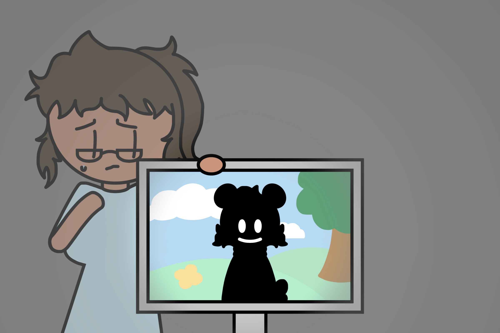

Tom has recently moved in and while looking for a job he ended up in front of a restaurant which for some reason he felt like he had to work there. But once he starts working there he learns through his coworkers that something bad happened right before he started working there along with encountering someone that is supposedly behind it all. Everyone working in the restaurant more or less doesn’t trust each other due to the incident that happened there but they are all trying to convince Tom to be on their side and help them even if it affects everyone else that works there. Who will Tom choose to work with and will he make that place better or for worse after it is all said and done?
Claire is a student in college and in their free time they work on a personal game featuring a character of theirs that they have created a long time ago. But for a while now they have been dealing with internal problems and are having a hard time dealing with it. One day however when running and testing their code the character inside the game seems to be more lively and attentive than usual. Claire is first confused but soon learns there is more to the character that meets the eye. Would this character be the solution to all their problems or would it be just one more problem for Claire to deal with?